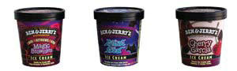

Issue #215, April/May 2006
Next time you indulge in “Chunky Monkey,” “Phish Food” or another funky ice cream flavor from Ben & Jerry’s, you can feel great - not guilty - because you’re supporting a conscientious company with significant environmental initiatives. From sourcing ingredients to packaging products, Ben & Jerry’s addresses the footprint its ice cream business leaves on the world. Some of these efforts include composting waste, reducing paper use, improving the energy efficiency of stores and production plants and turning ice cream byproducts into chemical-free fertilizer. Ben & Jerry’s also works with dairy farmers and scientists to develop better ways to handle dairy farm manure - a major source of pollution. Furthermore, the milk that goes into each delectable flavor comes from cows that have not been treated with artificial growth hormones.
The owners also use the power of their decisions “to help drive social change.” Ben & Jerry’s pays a premium price for its ingredients, such as cocoa, vanilla and coffee, to suppliers in farmer-run cooperatives. This economic model ensures profits for those who produce the food.
When Ben & Jerry’s can’t find alternatives to harmful business practices, it just invents them. In 1998, the company became the first frozen food manufacturer to use unbleached paperboard containers, which it calls “Eco-Pints.” And recognizing that traditional refrigeration contributes to ozone depletion and global warming, Ben & Jerry’s helped fund a project to invent an eco-friendly thermoacoustic freezer. Unlike conventional freezers, which use toxic chemicals to lower temperatures, this unique freezer “chills out to sound waves.”
One of Ben & Jerry’s fundamental practices is keeping the public informed about its environmental impact. Through its Environmental Timeline, anyone can see that the company has progressed from building their first store out of reclaimed materials (1978) and promoting alternative energy with a solar-powered bus tour (1991), to agreeing to reduce greenhouse emissions by 10 percent (2002) and promoting preferable and painless alternatives to “paper-pile-proliferation” in its offices (2003).
Because no one knows better than these ice cream makers that “when it’s melted, it’s ruined,” Ben & Jerry’s is making perhaps its most far-reaching contribution by educating the public about global warming. Graduates of their Climate Change College (www.climatechangecollege.org) are trained to inspire businesses and citizens to take positive action for our warming planet. The curriculum culminates in a trip to the Arctic region to see the effects of global warming firsthand. To learn about Ben & Jerry’s other climate change initiatives, visit www.lickglobalwarming.com.
|
Tabitha Alterman Josh Martin and Jake Jones, two tie-dyed dudes from a Ben & Jerry’s in Lawrence, Kan., display their favorite flavors - packaged in “Eco-Pints.” |
 T. Stallbaumer Next time you indulge in “Chunky Monkey,” “Phish Food” or another funky ice cream flavor from Ben & Jerry’s, you can feel great - not guilty - because you’re supporting a conscientious company with significant environmental initiatives. |
|